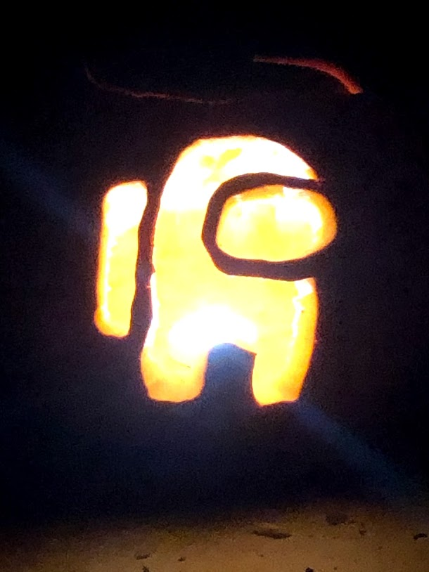

Obviously taken near the end of the month, this is a picture of my Pumpkin for the year. I very obviously got hooked on Among Us the month before when that blew up. Despite that, I've heard of the game prior to it becoming popular. People scream about it being a dead game, but I still find it fun to play from time to time. Previous ImageNext Image